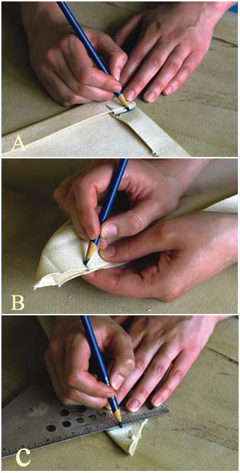
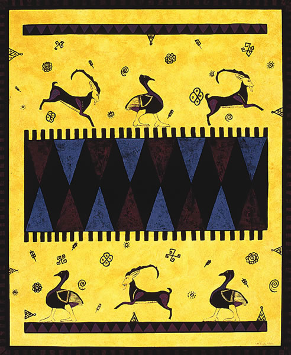
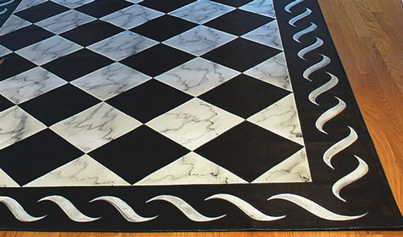
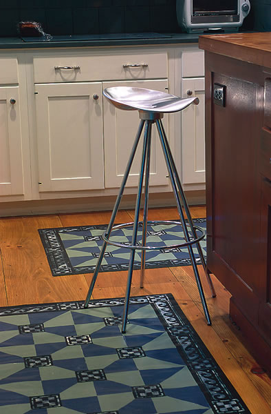
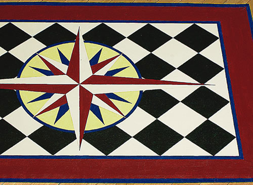

Make Colorful Canvas Carpets
Enjoy beautiful, easy-to-make floorcloths.
By Lisa Curry Mair
June/July 2006
Hand-painted floorcloths are a great alternative to area rugs. Not only are they economical and simple to make, theyre also a perfect combination of beauty and practicality. Custom canvas floorcloths allow you to create designs in any size and color to match both your home and your budget.
Floorcloths add warmth to cold floors and wont collect dust or dust mites like piled rugs and carpeting. Plus, they can stand up to years of heavy traffic and will wipe clean with a damp mop. Floorcloths have a thick polyurethane finish applied over several coats of paint, which strengthens the surface, yet keeps it flexible.
The same basic steps are used in every project: 1. Prepare the canvas. 2. Paint the floorcloth. 3. Seal the finished piece. The essential supplies are inexpensive and easy to find at paint, craft and hardware storesyou probably already have many of the things youll need in your basement or garage.
How To Make Floorcloths
Before you begin, set up a work space where you can leave the floorcloth to dry undisturbed for several hours. This space should be dust-free, well-lit and well-ventilated. To allow paint fumes to dissipate, plan to leave windows open, or consider choosing an area in a garage or outbuilding. A card table works well for small projects, though you may need to use 8-foot tables or the floor for larger floorcloths. Cover your work area with plastic and tape the edges down to prevent it from slipping.
Step 1: Shrink the canvas. Canvas is made of 100 percent cotton, so it should be preshrunk before painting. When purchasing canvas, allow at least 6 extra inches in all directions to allow for shrinkage and hemming. To shrink the canvas, lay it on the plastic and smooth it out as much as possible. With a large sponge, soak the canvas by scrubbing hot water onto the entire surface. When the surface has been uniformly soaked, roll over the wet canvas and soak the other side. Leave the canvas flat and allow it to dry completely. Drying may take a day or two, depending on humidity levels.
Step 2: Cut the canvas. Choose the size of your floorcloth, then add 2 inches to the length and width to allow for a hem. Double-check all the measurements, then cut the canvas with sharp fabric scissors using long, firm strokes.
Step 3: Turn the hem. A clean hem is essential for a floorcloth to stand up to daily wear and tear. A well-made floorcloth lies flat on the floor with no warps or wrinkles.
To sew a hem, first use a pencil to draw four lines 1 inch in from and parallel to the edges of the floorcloth. These will be your folding lines. Preheat an iron to the hottest steam setting. Place one edge of the floorcloth on the ironing board with the pencil lines facing down. Run a damp sponge along both sides of the floorcloth edge, soaking the front and back of the line. Fold the edge so the drawn line is at the outside of the fold, and press it with the iron. Repeat this process on the other three edges, always turning the hem to the same side. Work slowly to ensure a good fold, being careful not to crease other areas of the floorcloth as you work.
Step 4: Sew the corners. Mitered corners are sewn corners that turn all the rough edges of your canvas inward to create a clean edge that wont fray.
Using a pencil on the canvas, place two marks (1 and 2) where the two hems intersect (photo A, below). Open the folds and place two more marks (3 and 4) on the reverse sides of the two marks you just made. Bring marks 1 and 2 together until they touch (photo B). Align marks 3 and 4 on the outside. From mark 3, draw a line perpendicular to the folded edge (photo C). Pin the corner securely in place. Repeat this entire procedure on the other three corners. Carefully stitch along the drawn lines with a sewing machine.
Cut away the excess canvas, being careful not to cut too close to the tip of the corner. Press the seam open with a hot iron so it lies flat. Repeat these steps on the other three corners. Turn the corners right side out. Use the handle of a spoon (or some other pointed object) to push out the fabric all the way and make clean, square corners. Press the corners well with the iron on the highest setting.
Step 5: Sew the edges. A floorcloth made with a stitched hem will last for years.
Using a straight, long stitch on a sewing machine, sew all the way around the perimeter of the floorcloth, about five-eighths of an inch in from the folded edge. Trim away any stray threads with scissors. Iron the entire floorcloth to ensure crisp, flat edges and square corners.
Step 6: Paint the hem. A painted hem prevents fraying and gives your floorcloth a continuous painted edge. The paint also stiffens the canvas and locks in the stitches on the hem. Use the same paint color you chose for your base coats in Step 7.
Lay the floorcloth with the back (and hem) facing up. Slide an index card under the hem at one of the corners. Using a 1-inch paintbrush, paint the hem, sliding the index card along underneath the hem to prevent painting the back of the floorcloth.
When youve painted all the way around the hem, let it dry for at least three hours before turning over the floorcloth.
Step 7: Apply the base coats. Apply two base coats of latex paint to your floorcloth to stiffen the canvas and ensure an even application of the paint you will use for the design. To save yourself a step, use one of the colors in the design as a base coat. Think about the best sequence of paint colors, then use the first (usually the background color) as the base coat color.
When the hem is completely dry, turn over the floorcloth. With a lint remover, lift off all pieces of lint, dust and stray threads of canvas from the front of the floorcloth. Use a 2-inch brush to paint the entire surface of the floorcloth. Allow the floorcloth to dry overnight. Apply a second coat, keeping the brush strokes smooth and even, and again allow the cloth to dry overnight.
Step 8: Paint the design. Consider using stencils, stamps or a computer to produce uniform designs that can be easily reproduced. And plan your design in advance, so your big decisions (and mistakes) are made on paper. The time spent perfecting a design is worth every minute, as it will make you more confident and relaxed when you paint the floorcloth.
Latex enamel is the best choice for floorclothsthe plastics in the paint keep it flexible and make it less likely to crack when dry. More expensive latex enamel lasts longer and performs better than low-grade paint. The latest innovations in latex paint make it comparable in durability to oil-based paint, plus latex is much easier to clean up, dries faster and is more environmentally friendly. If possible, choose paints with low levels of volatile organic compounds (VOCs), chemicals that can cause health problems and contribute to indoor air pollution. (For more information on low-VOC paints, see Stick with Safe Paint, October/November 2003.)
Step 9: Seal the floorcloth. Allow the floorcloth to dry at least 24 hours before you apply a clear polyurethane finish. Latex paint can take up to a week to dry completely, even though it is dry to the touch after about an hour. The longer you allow the latex to dry, the less cracking youll see later.
Using a 4-inch brush, apply sealant from the top left corner and work down, then across the entire floorcloth. Be sure to brush all the way to the edges, so you seal all the exposed paint surfaces. Apply at least three coats of polyurethane, allowing 12 hours of drying time between coats. Dont be alarmed by a cloudy appearance; polyurethane goes on cloudy and dries clear. Let the floorcloth cure for a week before putting it on the floor. This ensures the latex has completely dried and the polyurethane is sufficiently hardened.
Floorcloth care
For day-to-day maintenance, sweep or vacuum dirt from the surface of the floorcloth to prevent it from scratching the polyurethane finish. When needed, use a damp mop and a mild detergent like oil soap to clean your floorcloth, then towel it dry to bring out a nice shine. Occasionally, you may need to apply a coat of floor wax to restore the original luster. If the floorcloth is in a high-traffic area, you might want to apply a revitalizing coat of polyurethane annually.
Once you start making floorcloths, it will be hard to stop. You will find uses for them in almost every room of your house. With a little practice and some imagination, youll discover inspiration for colors, textures and designs inside as well as outside your home.
Adapted from Floorcloth Magic: How to Paint Canvas Rugs for Decorative Home Use by Lisa Curry Mair. To order, see Mothers Bookshelf, Page 121. Mair has been designing, painting and selling floorcloths since the early 1990s. She operates her business, Canvasworks (www.canvas worksfloorcloths.com), from a restored 18th-century carriage house in Vermont.
 GILES PRETT/STOREY BOOKS Attractive, custom floorcloths can be sized to fit any area in your house. |
 GILES PRETT/STOREY BOOKS These photos show how to mark the canvas before sewing mitered hem corners. |
 JERRY MCCOLLUM/STOREY BOOKS You can use a variety of painting techniques to create unique “textures,” such as this tribal design. |
|
 GILES PRETT/STOREY BOOKS Try a style such as this faux marble texture. |
 GILES PRETT/STOREY BOOKS Floorcloths allow you to use a broad palette of colors to customize your designs. |
 GILES PRETT/STOREY BOOKS Floorcloths have been used in homes throughout the United States for hundreds of years. |